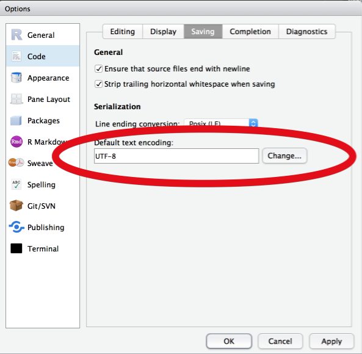

6 Datentypen
Es gibt eine Reihe von Unterscheidungsmöglichkeiten zwischen verschiedenen Arten von Daten.
Neben der naheliegenden Unterscheidung zwischen “Zahlen” und “Buchstaben” gibt es diverse andere Typen, die R verwendet.
Technisch gesehen müssten wir hier noch zwischen Typen und Klassen unterscheiden, aber für die meisten unserer normalen Anwendungszwecke ist es nicht unbedingt notwendig Typen und Klassen auseinanderhalten zu können, weshalb wir hier auch mehr oder weniger beides gleichzeitig abhandeln.
“Und wieso sollte uns interessieren, wie R da unterscheidet?”
R ist verwirrt, wenn wir Buchstaben in eine Funktion stecken, die Zahlen erwartet. Genauso ist R verwirrt, wenn wir den Mittelwert aus einer Tabelle berechnen wollen. Mittelwerte sind nur dann sinnvoll, wenn wir sie aus einem Vektor aus numerischen Werten berechnen. Da eure Daten in verschiedenen Formaten ankommen, und unterschiedliche Repräsentationen unterschiedliche Vor- und Nachteile haben, ist es wichtig, dass ihr im Zweifelsfall herausfinden könnt was ihr da vor der Nase habt und wie ihr damit arbeiten könnt.
Was eine R-Funktion mit einem Objekt anstellt hängt von der Klasse des Objekts ab, das ganze fällt vermutlich irgendwo unter “object oriented programming”, und wenn ihr InformatikerInnen kennt und die euch Fragen, ob R eine funktionale oder objektorientierte Frage ist, könnt ihr getrost “ja” sagen1.
Die wichtigste Funktion für diesen Abschnitt ist class(), was euch sagt was R unter einem bestimmten Objekt versteht (die Klasse des Objekts):
(Was es mit factor auf sich hat sehen wir ein paar Abschnitte weiter)
Zusätzlich gibt es typeof(), eine Funktion, die so speziell ist, dass ich sie in meinen ~4 Jahren R erst neulich entdeckt habe, weil der exakte Typ eines Objekts meistens weniger relevant ist als die Klasse:
6.1 Numeric (Zahlen und so)
Zahlen in R (und in den meisten anderen Programmiersprachen, beziehungsweise generell irgendwo, wo Maschinen rechnen) kommen in zwei Geschmacksrichtungen: Integer (ganze Zahlen) und double (Dezimalzahlen, Fließkommazahlen, floating point numbers).
Der Grund dafür hat damit zu tun, wie Computer intern Zahlen abbilden, binäres Zahlensystem, Bits, ihr wisst schon — komplizierter Kram wo sich kluge Menschen Dinge ausdachten, mit denen wir arbeiten können, wir aber nicht im Detail verstehen müssen.
Fließkommazahlen sind so gängig, dass R sogar eine einfache ganze Zahl wie 2 erstmal als double, also praktisch als 2.0 interpretiert, und wir explizit 2L schreiben müssen, wenn wir “2, aber als integer” meinen. Wieso wir dafür L brauchen sei dahingestellt, aber nun ja, der Unterschied ist da:
Integers sind ziemlich unproblematisch, werden aber in der Praxis nicht häufig explizit genutzt.
Fließkommazahlen (double) hingegen tauchen häufiger auf, weil Computer in den letzten Jahrzehnten echt verdammt gut darin geworden sind, mit Fließkommazhalen zu rechnen. Arithmetik mit integers ist auch okay, aber wenn eure Datensätze riesig und eure Statistik komplex ist, dann ist Geschwindigkeit von Rechenoperationen auf ein mal ein wichtiger Faktor.
Das Problem an der Sache ist nur leider, dass Fließkommazahlen seltsam sind. Nicht nur vom initialen Verständnis her, dazu empfehle ich euch herzlichst dieses schöne Video von Tom Scott, sondern auch für ganz reale Konsequenzen, über die wir stolpern können, wenn wir nicht aufpassen:
Wait, what?
Und das ist der Grund warum Fließkommazahlen (double) seltsam sind.
Die kurze Version: \(\sqrt{2}\) ist eine irrationale Zahl, das heißt sie hat unendlich viele Nachkommastellen. Computer können nur eine begrenzte Anzahl an Nachkommastellen speichern, weshalb das Resultat von einer Berechnung wie \(\left(\sqrt{2}\right)^2\) zwar für alle praktischen Zwecke immer noch 2 ist, aber irgendwie auch nicht. Wenn wir mit Datensätzen arbeiten und darin rumrechnen dann sind solche kleinen Rundungsfehler egal, aber wenn wir uns auf Operatoren wie == verlassen, um berechnete Werte zu vergleichen, dann müssen wir vorsichtig sein.
An dieser Stelle ein kurzer Exkurs in die Numerik:
Die absolut kleinste Toleranz, die euer Computer für Fließkommazahlen berücksichtigt, könnt ihr euch mit .Machine$double.eps anzeigen lassen2. .Machine ist ein besonderes Objekt in R, dass Informationen zu eurem Computer (sprich eurer Maschine) sammelt.
Code
# Wie groß ist die Abweichung vom erwarteten Ergebnis?
sqrt(2)^2 - 2
#> [1] 4.440892e-164.4408920985e-16 ist Computer für \(4.4408920985 \cdot 10^{-16}\), also ungefähr…
\[\frac{4.4408920985}{10000000000000000} \approx 0.00000000000000044\]
Das ist… ziemlich wenig, und im Alltag auch ziemlich egal, aber wie gesagt: Für R ist das ein Unterschied.
Code
# Wie groß ist die Toleranz?
.Machine$double.eps
#> [1] 2.220446e-16
# Moment mal…
.Machine$double.eps * 2
#> [1] 4.440892e-16
# Wenn jetzt…
(.Machine$double.eps * 2) == (sqrt(2)^2 - 2)
#> [1] TRUETatsache.
Wir könnten noch weiter damit rumspielen, aber als Lektion sollte eigentlich nur hängenbleiben, dass Zahlen in R gerne mal mehr sind, als euch in der Konsole angezeigt wird.
One does not simply round floating point numbers — Programmer Boromir
Wenn ihr mal auf sowas stoßen solltet, dann verwendet am besten einfach die Funktion round() um eure Werte auf eine sinnvolle Anzahl Nachkommastellen zu runden:
Im Zweifelsfall einfach Genauigkeit opfern um den Verstand zu behalten
Theoretisch ist “numeric” für Zahlen eine Klasse, und integer und double sind die beiden Typen, aus denen die Klasse besteht.
6.2 Character (Buchstabenzeugs)
Characters sind Strings sind irgendwas was aus mehr als nur Zahlen besteht (zumindest meistens). Die Unterscheidung zwischen numeric und character ist intuitiv ziemlich einfach, und in eurer statistischen Praxis werdet ihr vermutlich meistens auf numerics treffen, wobei characters dann meistens nur für nominale Variablen (Gruppenzugehörigkeiten, Entscheidungen für A, B, C) gebraucht werden. Tatsächlich werden eure nominalen Variablen sogar eher als factor daherkommen, dazu dann der nächste Abschnitt.
Characters verhalten sich im Grunde wie Worte. Wir können sie aneinanderhängen, wir können sie vergleichen, aber wir können zum Beispiel keine Berechnungen damit durchführen:
namen <- c("Lukas", "Tobias", "Christoph")
mean(namen)
#> Warning in mean.default(namen): argument is not numeric or logical:
#> returning NA
#> [1] NA
# Zahlen != Buchstaben
5 == "5"
#> [1] TRUE
# Groß- / Kleinschreibung ist wichtig!
"Lukas" == "Lukas"
#> [1] TRUE
"Lukas" == "LUKAS"
#> [1] FALSE
# Strings aneinanderhängen
paste("Lukas", "hat", "Spass", sep = "_")
#> [1] "Lukas_hat_Spass"Die Funktionen paste und paste0 sind ziemlich praktisch wenn ihr mit Strings arbeitet, die werdet ihr früher oder später mal brauchen.
Ansonsten dürfte euch aufgefallen sein, dass man Spaß mit ß schreibt. Das ist korrekt. Allerdings zählt ß als Sonderzeichen, genauso wie Umlaute (üöä). R kann damit zwar prinzipiell umgehen, solange ihr das richtige Encoding verwendet, aber dennoch bietet es sich an auf Sonderzeichen in R-Code zu verzichten, um Inkompatibilität mit anderen vorzubeugen.
Um eure Einstellungen anzupassen und auf Nummer sicher zu gehen, öffnet die Einstellungen von RStudio und setzt die folgende Einstellung auf UTF-8 (Unicode):

Encoding ist so der einfachste Grund aus dem eure Scripte und Dokumente auf einmal kaputt aussehen, wenn ihr sie von einem Windows-Rechner an einen Mac oder eine Linux-Kiste schickt. Mac und Linux können sich wenigstens meistens auf Unix-Standards und Unicode eignen, aber Windows… Windows ist seltsam.
Encoding ist kodifizierter Selbsthass, aber Unicode ist großer Spaß
6.3 Factor (Here be dragons)
Okay, der haarige Teil.
Die factor-Klasse in R ist unheimlich praktisch, aber auch ziemlich unintuitiv bei der ersten Verwendung. Das liegt nicht zuletzt daran, dass ein factor von aussehen meistens einfach aussieht wie ein character, aber nunmal kein character ist.
Factors haben zwei Bestandteile:
-
level: Die Merkmalsausprägung, so wie R denfactorsieht. Meistens numeric. -
label: (Optional) Die Bezeichnung der Merkmalsausprägungen, meistenscharacter, für die bessere Lesbarkeit.
Ein Beispiel aus dem sleep-Datensatz:
Wir sehen, dass group die Merkmalsausprägungen (levels) 1 und 2 hat, aber das ist für uns möglicherweise nicht wirklich aussagekräftig. Wir können die Variable modifizieren, und einen schöneren factor daraus machen:
Code
# Wir modifizieren nur die labels, nicht die level
sleep$group <- factor(sleep$group, levels = c(1, 2), labels = c("Medikament A", "Medikament B"))
# Jetzt werden uns unsere Labels angezeigt
sleep$group
#> [1] Medikament A Medikament A Medikament A Medikament A Medikament A
#> [6] Medikament A Medikament A Medikament A Medikament A Medikament A
#> [11] Medikament B Medikament B Medikament B Medikament B Medikament B
#> [16] Medikament B Medikament B Medikament B Medikament B Medikament B
#> Levels: Medikament A Medikament B
# Und unsere unveränderten Levels
levels(sleep$group)
#> [1] "Medikament A" "Medikament B"
# Aber wir können den factor immer noch wie Zahlen behandeln
as.numeric(sleep$group)
#> [1] 1 1 1 1 1 1 1 1 1 1 2 2 2 2 2 2 2 2 2 2Mit factor können wir praktisch zwei Lagen an Informationen in nur einer Variable speichern, einmal numerische levels und einmal character labels. Die Levels sind die eigentlich wichtige Information und die Labels sind praktisch nur für uns zur besseren Lesbarkeit da, zum Beispiel bei Tabellen oder Grafiken.
6.4 Besondere Typen
Eure Daten kommen meistens von anderen, zumindest in den ersten Semestern eures Studiums.
Meistens kommen eure Daten auch mit Fehlenden oder irgendwie kaputten Werten, mit denen ihr ohne Weiteres nichts anfangen könnt.
6.4.1 Fehlende Werte: NA
Vermutlich der wichtigste Datentyp, der euch begegnen wird. NA steht für Not Available und heißt, dass es an dieser Stelle einfach keinen Wert gibt. In einem Fragebogen wäre das zum Beispiel eine nicht ausgefüllte Frage, und das heißt für euch, dass ihr ohne Weiteres keine Annahme über diese Wert machen könnt. NA heißt nicht “da ist nichts”, sondern eher “da könnte was sein, aber ich weiß nicht”.
Das ist auch der Grund, warum der Mittelwert nicht funktioniert, wenn da NA drinstecken:
Klar könnten wir einfach annehmen, dass die fehlenden Werte 3 und 6 sind, aber das wissen wir nunmal nicht, und da R in der Regel nicht rät, sagt es halt auch “weiß nicht” in Form von NA.
In solchen Fällen müsst ihr explizit NA ignorieren:
Ihr könnt auch mit der Funktion is.na prüfen, ob ihr fehlende Werte habt. Beachtet, dass == zum vergleichen nicht funktioniert!
6.4.2 Leere Werte: NULL
Wenn NA fehlende Werte sind, was soll dann NULL sein?
Naja, ich merke mir das immer ungefähr so:
-
NULL: Da ist nichts, also so wirlich nichts, und ich weiß das auch! -
NA: Da ist zwar nichts, aber ich hab keine Ahnung ob da nicht doch was sein sollte ¯\_(ツ)_/¯
NULL wird euch vermutlich weniger häufig begegnen als NA, zumindest in Datensätzen.
Ansonsten taucht NULL eher bei R-Funktionen als default argument auf, also ein Argument einer Funktion, das nicht gesetzt ist, außer ihr setzt es explizit. Das klingt jetzt etwas abstrakt, aber wir werden im Laufe dieser Einführung vermutlich noch Beispiele dafür sehen.
NULL ist leer, und zwar mir SicherheitNA ist leer, aber man weiß es nicht so recht
6.4.3 To Inf and BeyoNaNd!
Habt ihr schonmal durch 0 geteilt? Oder überlegt was \(0^0\) ist?
Das ist die Ecke, in der Inf und NaN auftauchen.
Inf und -Inf stehen erstmal nur für \(\infty\) und \(-\infty\) und sind Rs Weg euch zu sagen, dass ihr da gerade den Bereich der alltagstauglichen Zahlen überschritten habt.
Nehmt mal folgendes Beispiel:
Code
# 2 hoch 10… geht noch
10^10
#> [1] 1e+10
# Auch das…
10^100
#> [1] 1e+100
# Okay, aber jetzt…
10^1000
#> [1] InfDas ist R einfach zu viel, bzw. es ist eurem Computer generell zu viel.
Kurzer reminder: 1e10 ist Computer für \(1 \cdot 10^{10}\), also eine 1 mit 10 Nullen, also…
\[1e10 = 1 \cdot 10^{10} = 10000000000\]
Dementsprechend könnt ihr euch vorstellen, wie groß \(10^{1000}\) wäre, und R macht solche Späße nicht mit und sagt einfach Inf.
Wenn ihr Inf oder -Inf in euren Ergebnissen seht, dann solltet ihr nur wissen, dass es da ein entweder viel zu großes oder viel zu kleines Ergebnis gab.
Und dann ist da noch die Sache mit NaN.NaN steht für not a number und passiert dann, wenn ihr irgendwas mathematisch fragwürdiges macht, wie zum Beispiel 0 durch 0 teilen:
Code
0 / 0
#> [1] NaNDas ist mathematisch nicht definiert, und wieso das so ist und mehr dazu findet ihr zum Beispiel bei Numberphile gut erklärt.
Hier solltet ihr auch nur wissen, dass es das gibt und dass ihr es im Zweifelsfall vermeiden wollt, wenn es in euren Ergebnissen auftaucht.
6.5 Tabellen: data.frame
All eure Datensätze im Studium kommen in Tabellenform.
Tabellen in R sind im Grunde nichts anderes als Listen von Vektoren mit gleiche Länge: Der sleep-Datensatz zum Beispiel besteht aus drei Vektoren der Länge 20, und jede Spalte verhält sich wie ein Vektor mit bestimmten Typen.
Um sich einen Überblick über einen Datensatz zu verschaffen empfiehlt sich die Funktion str (lies structure), oder auch head:
Code
# Die ersten paar Zeilen
head(sleep)
#> extra group ID
#> 1 0.7 Medikament A 1
#> 2 -1.6 Medikament A 2
#> 3 -0.2 Medikament A 3
#> 4 -1.2 Medikament A 4
#> 5 -0.1 Medikament A 5
#> 6 3.4 Medikament A 6
# Nur die ersten 2 Zeilen
head(sleep, n = 2)
#> extra group ID
#> 1 0.7 Medikament A 1
#> 2 -1.6 Medikament A 2
# Struktur des Datensatzes
str(sleep)
#> 'data.frame': 20 obs. of 3 variables:
#> $ extra: num 0.7 -1.6 -0.2 -1.2 -0.1 3.4 3.7 0.8 0 2 ...
#> $ group: Factor w/ 2 levels "Medikament A",..: 1 1 1 1 1 1 1 1 1 1 ...
#> $ ID : Factor w/ 10 levels "1","2","3","4",..: 1 2 3 4 5 6 7 8 9 10 ...Das Output von str sagt euch alles, was ihr braucht:
- Die Klasse des Objekts, hier ein
data.frame, das Tabellenformat- Die Anzahl der Zeilen (
20 obs.), und Spalten (3 variables)
- Die Anzahl der Zeilen (
- Die Spalten der Tabelle mit den ersten Werten
-
extra: Numerisch (num) -
group:factormit 2 Merkmalsausprägungen (w/ 2 levels), die Labels und die Levels -
ID:factormit 10 Labels ("1", "2", "3" …) und Levels (1 2 3 4 …)
-
Später werden wir noch andere Klassen für Tabellen sehen, die data.frame erweitern bzw. etwas aufhübschen, namentlich wird das tbl_df bzw. tibble sein, aber dazu müssen wir uns erst Packages ansehen.
6.6 Prüfen & Konvertieren
Was wir im Abschnitt zu factor am Ende mit as.numeric gemacht haben fällt unter Coercion, und heißt, dass Werte eines Typs in einen anderen Typ konvertiert werden sollen. Das Gegenstück dazu wäre is.numeric, was nachsieht, ob eine Variable bereits numeric ist.
Code
as.numeric("5")
#> [1] 5
as.numeric(5)
#> [1] 5
as.character(c(2, 5, 4, 3))
#> [1] "2" "5" "4" "3"Es gibt etliche solcher Konvertierungsfunktionen in R, manche mehr oder weniger nützlich, aber nun gut, sie sind da:
Code
# Römische Zahlen
as.roman(2017)
#> [1] MMXVII
# Hexadezimal
as.hexmode(255)
#> [1] "ff"
# Logische Werte
as.logical(0)
#> [1] FALSE
as.logical(1)
#> [1] TRUEDas ist einer von diesesn Logikwitzen basierend auf dem Umstand, dass das logische oder (
a | b) auch wahr ist, wenn sowohlaals auchbwahr ist.↩︎Habt ihr mal im Kontext von Computern oder Betriebssystemen/Software von “32bit” und “64bit” gehört? Da geht’s tatsächlich genau um dieses Ding mit den Fließkommazahlen. 64 bit kann einfach mehr Nachkommastellen speichern als 32bit. Vergleiche dazu auch
.Machine$double.digitsauf einem 32bit gegen ein 64bit-Betriebssystem↩︎